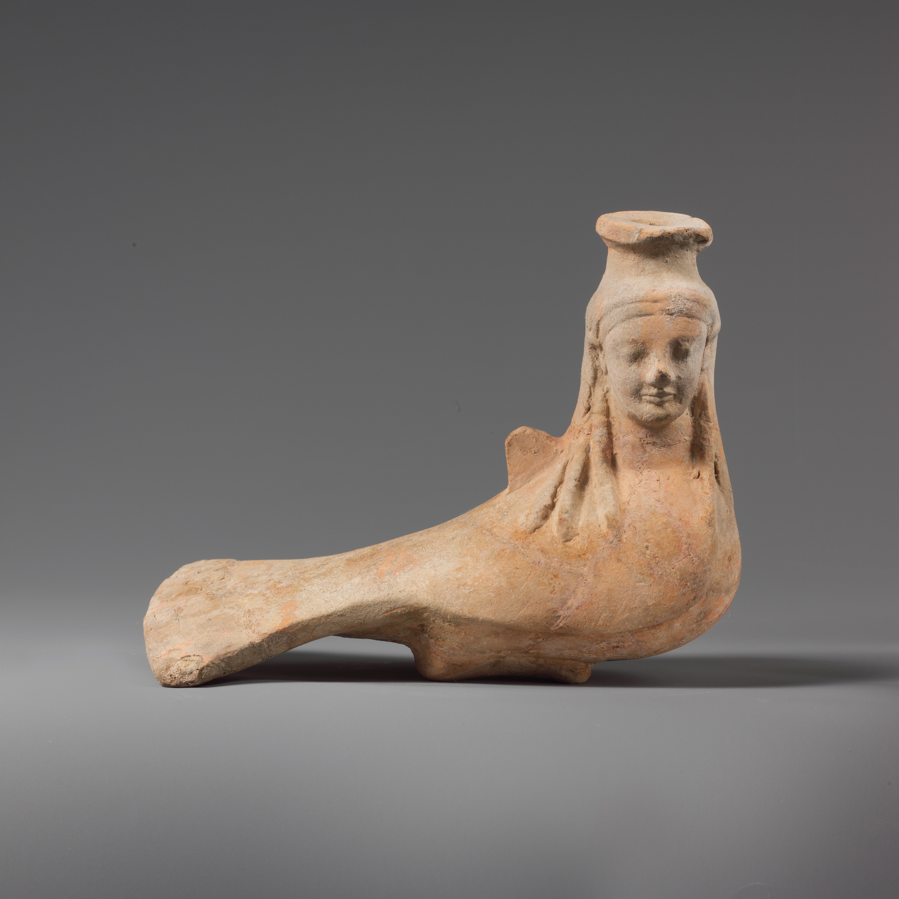
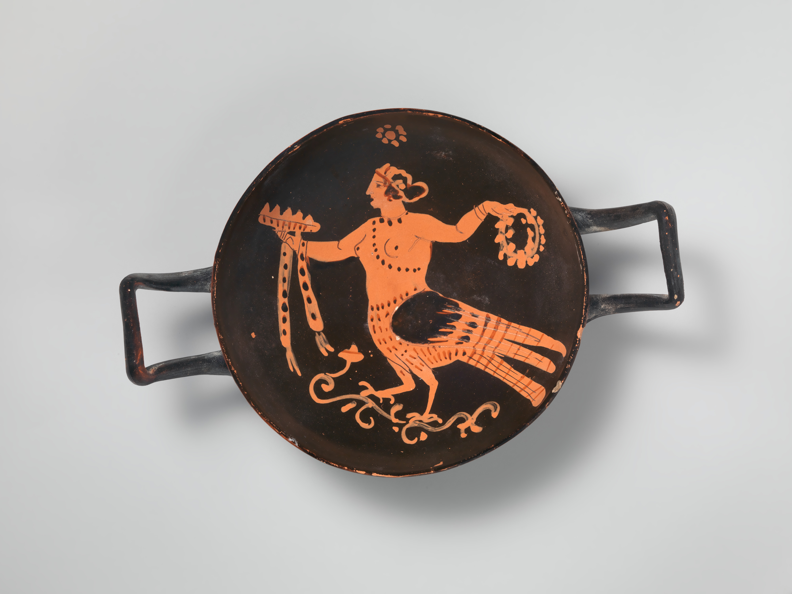
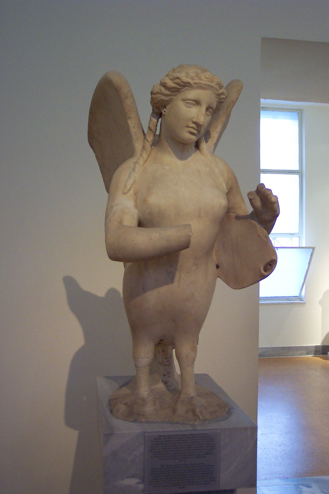
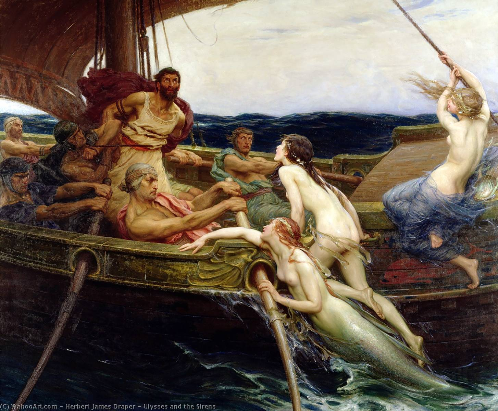
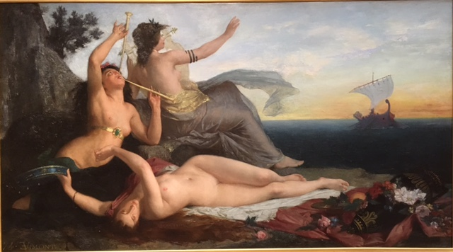

Terracotta vase in the shape of a Siren. ca. 550-500 B.C. Culture: East Greek.

Terracotta stemless Klix drinking cup. Late 4th century B.C. Culture: Greek, Southern Italian, Paestan

Funerary Siren statue made of pentelic marble. 370 B.C. Athens.

Painting of Odysseus and Sirens who appear more like mermaids. Painted by Herbert James Draper in 1679.

Les Sirènes, a painting by Edouard Vimont in 1874. French.